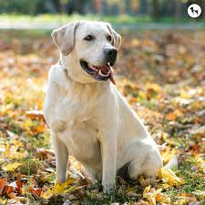
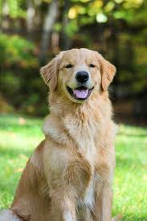
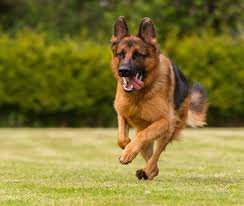
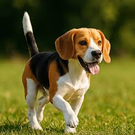

Perros Disponibles para Adopción
-

Max - Raza: Labrador Retriever - Edad: 3 añosMax es un perro cariñoso y energético que adora jugar y pasar tiempo con su familia. Es muy leal y se lleva bien con niños y otros perros.
-

Luna - Raza: Golden Retriever - Edad: 2 añosLuna es dulce, inteligente y muy afectuosa. Le encanta nadar y buscar pelotas. Es perfecta para familias activas que buscan un compañero leal.
-

Rocky - Raza: Pastor Alemán - Edad: 4 añosRocky es protector, valiente y muy inteligente. Requiere entrenamiento y ejercicio regular, pero es un excelente perro guardián y compañero para personas con experiencia.
-

Bella - Raza: Beagle - Edad: 1 añoBella es juguetona, curiosa y llena de energía. A pesar de su tamaño pequeño, tiene una gran personalidad. Es ideal para familias que disfrutan de un perro activo y divertido.
Proceso de Adopción
Para adoptar un perro dejanos tus datos y nos pondremos en contacto :